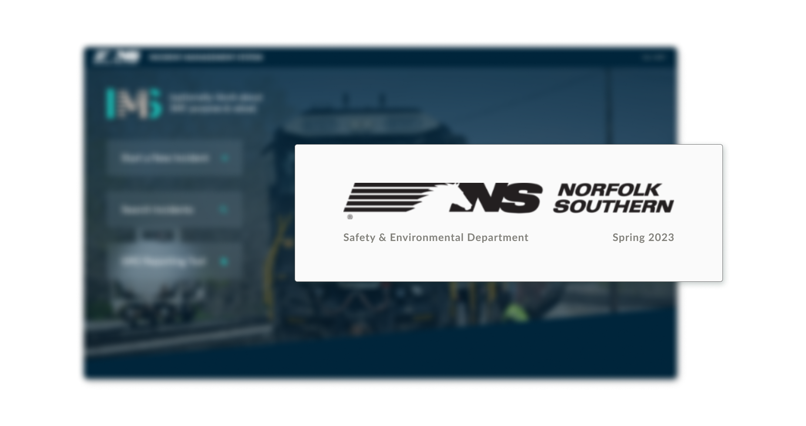
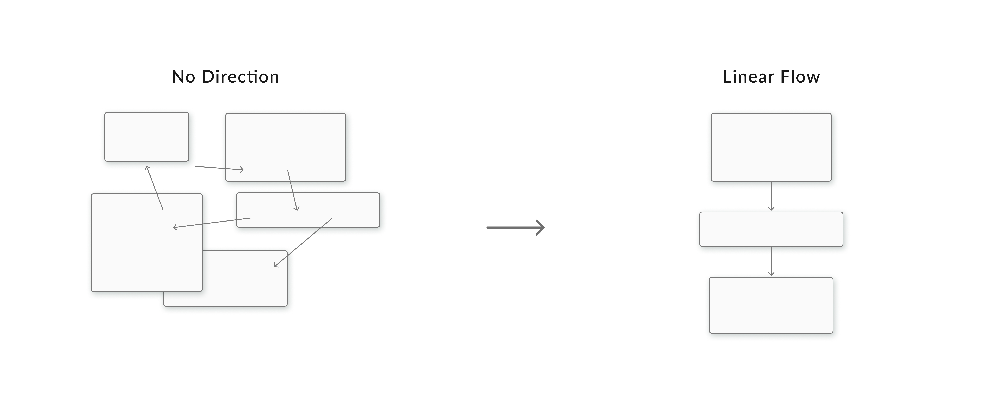
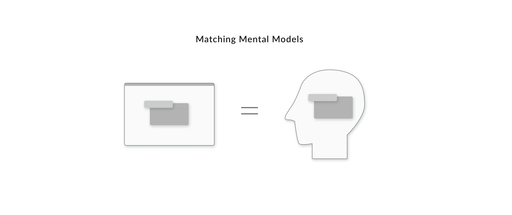
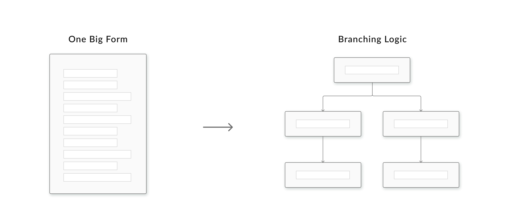

Improving safety incident reporting for railyard workers
Timeline —
Spring 2023
15 weeks
Role —
User Experience Design Intern
Team —
Mentor (UX Designer)
Product Owner
5 Angular Developers
Skills —
User Research
Product Design
Design Systems
Adobe XD
My Impact 🎇
Challenge
During my internship at Norfolk Southern, one of the largest railroad corporations in the US, my main project was redesigning the Incident Management System (IMS), an internal software application used for reporting safety incidents. The goal of the project was to improve ease of use, enhance data quality, and expedite reporting to comply with government regulations set by the Federal Railroad Administration (FRA).
Results
As the sole designer on this project, I worked closely with the product owner and Agile development team to identify issues with the current system, define product requirements and metrics for success, and map the ideal reporting workflow based on the end users' needs. Over my 15-week internship, I designed a guided interface that streamlined the incident reporting process and ensured accurate collection of all FRA-reportable information. Usability testing of the redesign showed a 150% reduced error rate per task, and 70% shorter time to complete each report.
Design Principles 💡
1. Lead the way

My research found that most users report an incident > 2x per year, so the system must be easily accessed by unfamiliar users. The original interface with layers of nested tabs and no specific order was frustrating and opaque to infrequent users. So, we redesigned the process into a step-by-step, instructed linear flow, a change that greatly reduced software bugs and helped users complete the report without any missing information.
2. Speak their language

The original system was written by government reporting experts in the dense regulatory language of the FRA, and grouped information by the pages of the old paper form reports. It didn’t match the language, mindset, or experience of the field workers who actually report the incidents. I reworked the information architecture based on user feedback like card sorting exercises, and rewrote legislative terminology into questions our users could easily understand.
3. Minimize cognitive load

To lighten the cognitive load on the user, I proposed the use of progressive disclosure to reduce the amount of information asked on each screen and overall. By implementing branching internal logic, we were able to remove unnecessary fields when reporting different incidents (as many as 50 fewer fields for some scenarios!)
Learnings ✨
1. 🔃 Adaptability
A week after I was placed on the project, a major derailment placed Norfolk Southern in the national spotlight, and proved the need for huge changes across the Safety & Environmental department. Under increased scrutiny, shifting priorities, and a company reorganization, I learned to manage high pressure in a cross-functional team, and balance the needs of many different stakeholders.
2. 🗣️ Advocating for the user
As the only designer working on the product, I had to articulate the value of user-centered design to my cross-functional team, and fight for the opportunity to interface directly with users. When users were inaccessible, I also learned to leverage alternative methods such as cognitive walkthroughs, heuristic analyses, and analyzing live data to gather insights.
3. 😤 Standing up!
Being the only woman, intern, and designer in a daily stand-up of 40+ people pushed me way out of my comfort zone. I accomplished things I couldn't imagine just a few months ago, like shaping the new product's functionality, leading a UXR workshop, and presenting my work to a group of more than 20 high-up stakeholders!
Reflection 💌
Overall, working on this product was exciting, challenging, and an amazing experience! Despite (or maybe because of?) the project's heightened visibility and expectations, I’m so happy with the work we managed to accomplish, and proud to be a part of something that will help prevent future accidents. I’m really grateful to my mentor James for the infinite support, and to our product owner Nathan for the trust. I grew so much as a designer & as a person this semester, and I’m so thankful to have had this opportunity 😊
Just a gal and her prototype 🤠 choo choo 🚂